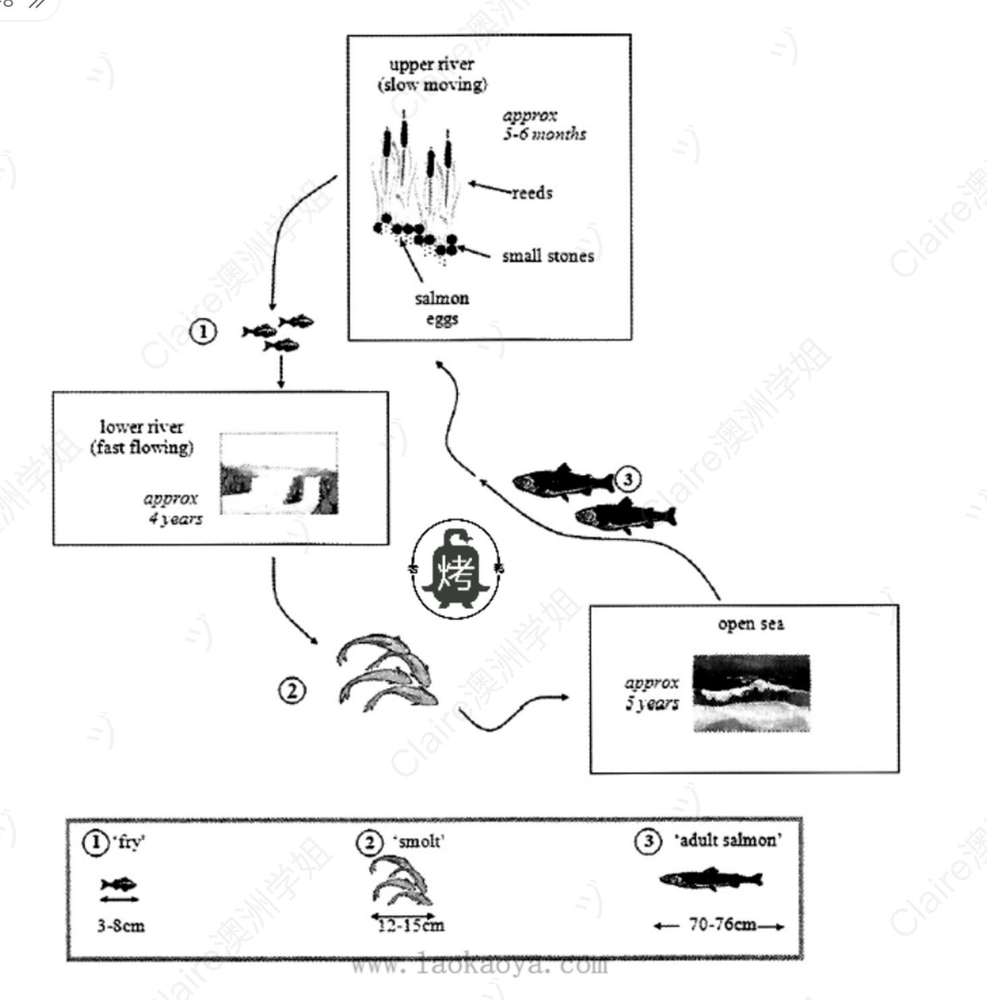

Life Cycle of Salmon
动态类 流程图（生命周期） 修改日期：2026-04-13
| 评分维度 | 修改前 | 修改后 | 变化 | 说明 |
|---|---|---|---|---|
| Task Achievement (TA) | 5.5 | 7.0 | +1.5 | Overview 完整覆盖三阶段 + 三环境 + 循环性；数据准确；所有关键特征均被选择性报告。 |
| Coherence and Cohesion (CC) | 5.5 | 7.0 | +1.5 | 使用流程图标准衔接序列（The process begins → Once hatched → migrate → Upon reaching → By the end → These adults then）；段内逻辑链条清晰。 |
| Lexical Resource (LR) | 5.0 | 7.0 | +2.0 | 引入 migrate, hatched, spawn, mature, slow-moving, faster-flowing, inhabit 等高级词汇；术语 fry / smolt 使用正确。 |
| Grammatical Range and Accuracy (GRA) | 4.5 | 7.0 | +2.5 | 零语法错误；使用了被动语态、分词结构、完成时、从句等多种句式。 |
题目原文：The diagram below shows the life cycle of a species of large fish called the salmon.
Summarise the information by selecting and reporting the main features, and make comparisons where relevant.

The diagram illustrates the life cycle of salmon.
8 wordsOverall, there are three main stages in the development of a salmon. Beginning with a eggs and ending to a fully mature adults.
23 wordsInitially, salmon begin their lives as eggs, which are hide under the small stones and cover by reeds where the water stream is gentle and slow, called upper river. It takes approximately half a year. Following this, the eggs become to fries, which three to eight centimeters in length. They are then move to lower river, where the water current become more faster than upper river, they will stay there for almost 4 years.
74 wordsOnce they are reaching 12 to 15 centimeters in length, which named smolts, they will swim to the open sea for nearly 5 years. After that, the smolts become fully mature adult salmon, with a body length of 70 to 76 centimeters, which are ready for reproduction. They return to the upper river areas to lay eggs. Finaly, the life of a salmon begins anew.
59 words开头段（Introduction / Paraphrase）
原因：paraphrase 更到位，使用同位语扩展句式，避免与题目雷同。
概述段（Overview）⚠️ 本段整体重写
⚠️ Overview 只概括了"三阶段"这一层信息，并存在多处语法错误（"a eggs" 冠词 + 复数错误、"ending to" 介词错误、"Beginning..." 残句），必须整段重写。
原文中的具体错误：原因：使用 "Overall, it is clear that..." 固定 Overview 引导句；用破折号嵌入三阶段术语；用 "inhabit three distinct environments" 补充"三种环境"维度；用 "thus completing a full cycle" 点明循环性——直接触发 TA 高分要素。
主体段一（Body Paragraph 1）— 从鱼卵到 fry，再迁入 lower river
原因：使用流程图固定模板；消除所有语法错误；用分词结构压缩句子，整段从 4 个零散短句变为 3 个信息密度高的复合句。
主体段二（Body Paragraph 2）— smolt 游向 open sea，长成 adult，循环开始
原因：使用流程图循环阶段标准模板；消除所有时态、拼写、搭配错误；结尾 "the life cycle begins anew" 呼应 Overview 中的 "completing a full cycle"，形成首尾呼应。
内容与结构建议
修改统计
本次修改在保留用户"分三段推进"结构的基础上，重点优化了四方面：(1) 重写 Overview 使其覆盖三阶段 + 三环境 + 循环性；(2) 系统纠正被动语态、冠词、比较级、拼写等基础语法错误；(3) 升级衔接序列为流程图标准模板；(4) 引入 migrate / hatch / spawn / mature / inhabit 等专业词汇。修改后文章逻辑紧凑、术语专业，达到 7.0 分水平。
The diagram illustrates the various stages in the life cycle of the salmon, a species of large fish.
18 wordsOverall, it is clear that salmon pass through three main developmental stages — fry, smolt and adult — and inhabit three distinct environments before returning to their birthplace to spawn, thus completing a full cycle.
34 wordsThe process begins in the slow-moving waters of the upper river, where salmon eggs are laid among reeds and hidden beneath small stones for approximately five to six months. Once hatched, the young fish, now known as 'fry' and measuring between three and eight centimetres in length, migrate downstream to the lower river. In this faster-flowing environment, they remain for around four years.
61 wordsUpon reaching a length of 12 to 15 centimetres, the fish, at this point referred to as 'smolts', swim out to the open sea, where they spend nearly five further years maturing. By the end of this period, they have grown into fully mature adult salmon, with body lengths of 70 to 76 centimetres. These adults then return to the upper river to lay their eggs, and the life cycle begins anew.
62 words